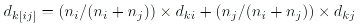
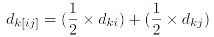
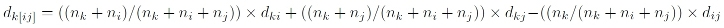

Results of discrete cluster analysis are found under Discrete clustering - clustermaps and dendrograms in Gabmap. Here you find a cluster map and the corresponding dendrogram. Remember that caution should be taken when interpreting these results, because cluster analysis is not a stable technique.
You can inspect the results of four different clustering algorithms in this view in Gabmap. All of them are so-called hierarchical clustering methods. They produce a set of nested partitions of the data by finding successive clusters using previously established clusters. This kind of hierarchy is represented with a dendrogram—a tree in which more similar elements are grouped together. The four methods are Complete Link, Group Average, Weighted Average and Ward's Method. The different algorithms have different ways of determining how distances between newly formed clusters are calculated in the clustering process. The different methods have different biases, for example, Ward's Method favors equal size clusters, while the other methods are more true to the original linguistic distances.
The default cluster map represents eight clusters obtained by using Weighted Average for clustering. You can change clustering method and the number of clusters displayed in the box under the map.
Complete link, also called furthest neighbor, uses the most distant pair of objects while fusing two clusters. It repeatedly merges clusters whose most distant elements are closest.
Group Average (or Unweighted Pair Group Method using Arithmetic Averages, UPGMA) belongs to a group of average clustering methods. In Group Average, the distance between any two clusters is the average of the distances between the members of the two clusters being compared. The average is weighted naturally, according to size. As a consequence, smaller clusters will be weighted less and larger ones more.
Algorithm:
Weighted Average (or Weighted Pair Group Method using Arithmetic Averages, WPGMA), just as Group Average, calculates the distance between the two clusters as the average of the distances between all members of two clusters. But in Weighted Average, the clusters that fuse receive equal weight regardless of the number of members in each cluster.
Algorithm:
This method is also known as the minimal variance method. At each stage in the analysis clusters that merge are those that result in the smallest increase in the sum of the squared distances of each individual from the mean of its cluster. This method uses an analysis of variance approach to calculate the distances between clusters. It tends to create clusters of the same size (Legendre & Legendre, 1998).
Algorithm:
